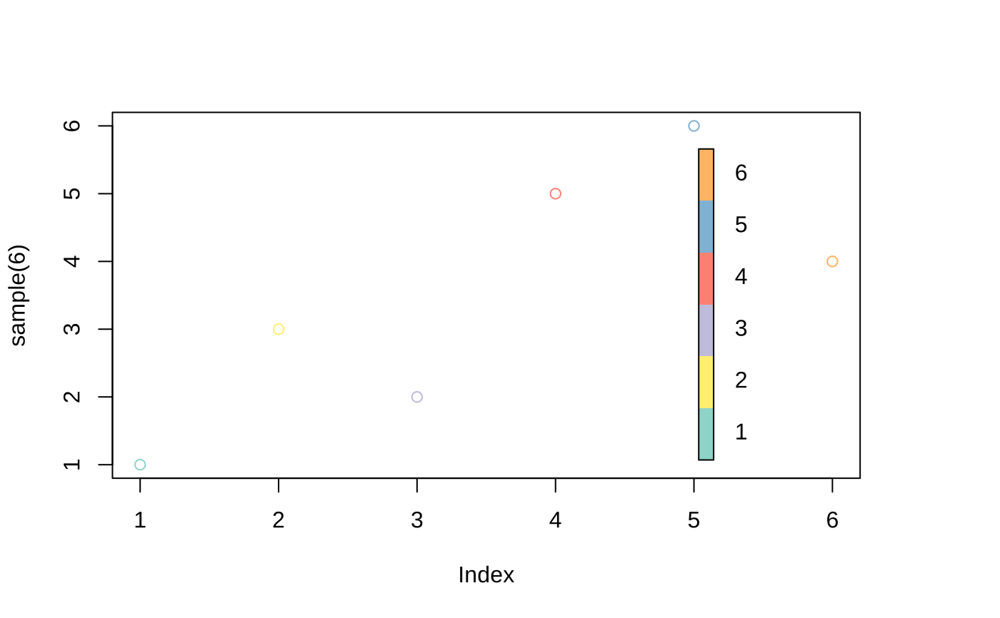

Creates a color legend for a vector used to color a plot. It will use the current palette() or the specified pal as reference.
colorlegend( col, pal = palette(), log = FALSE, posx = c(0.9, 0.93), posy = c(0.05, 0.9), main = NULL, cex_main = par("cex.sub"), cex_axis = par("cex.axis"), col_main = par("col.sub"), col_lab = par("col.lab"), steps = 5, steps_color = 100, digit = 2, left = FALSE, ..., cex.main = NULL, cex.axis = NULL, col.main = NULL, col.lab = NULL )
| col | Vector of factor, integer, or double used to determine the ticks. |
|---|---|
| pal | If |
| log | Use logarithmic scale? |
| posx | Left and right borders of the color bar relative to plot area (Vector of length 2; 0-1) |
| posy | Bottom and top borders of color bar relative to plot area (Vector of length 2; 0-1) |
| main | Legend title |
| cex_main | Size of legend title font (default: subtitle font size |
| cex_axis | Size of ticks/category labels (default: axis font size |
| col_main | Color of legend title (default: subtitle color |
| col_lab | Color of tick or category labels (default: axis color |
| steps | Number of labels in case of a continuous axis. If 0 or FALSE, draw no ticks |
| steps_color | Number of gradient samples in case of continuous axis |
| digit | Number of digits for continuous axis labels |
| left | logical. If TRUE, invert posx |
| ... | Additional parameters for the text call used for labels |
| cex.main, cex.axis, col.main, col.lab | For compatibility with |
This function is called for the side effect of adding a colorbar to a plot and returns nothing/NULL.
When passed a factor or integer vector, it will create a discrete legend, whereas a double vector will result in a continuous bar.
colorlegend(color_data)